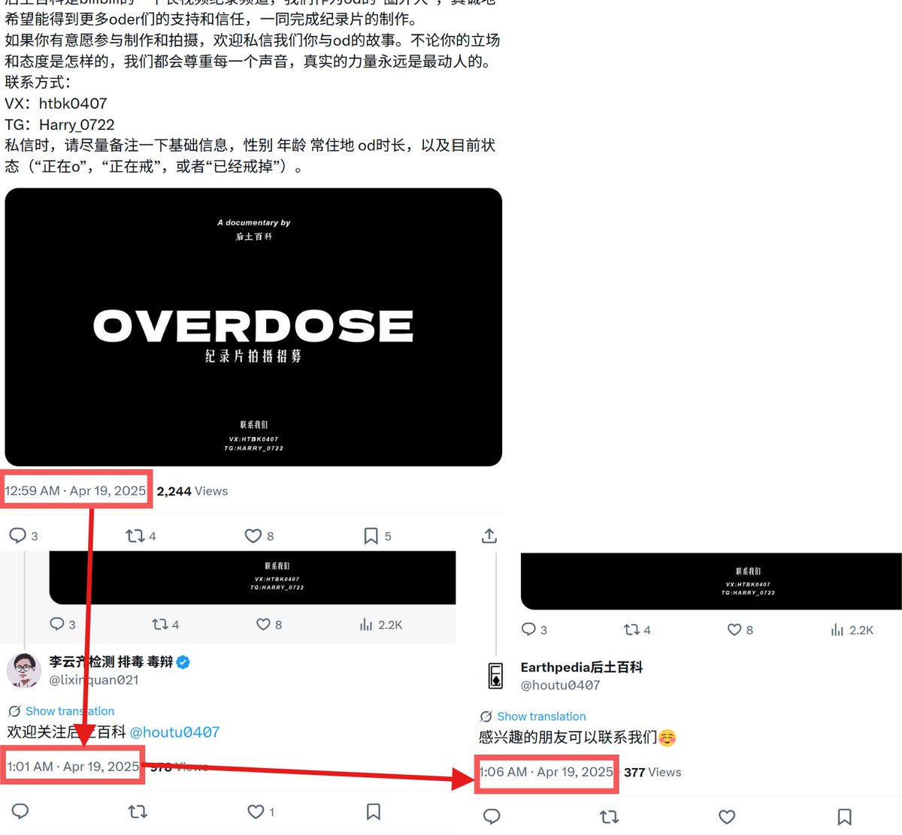
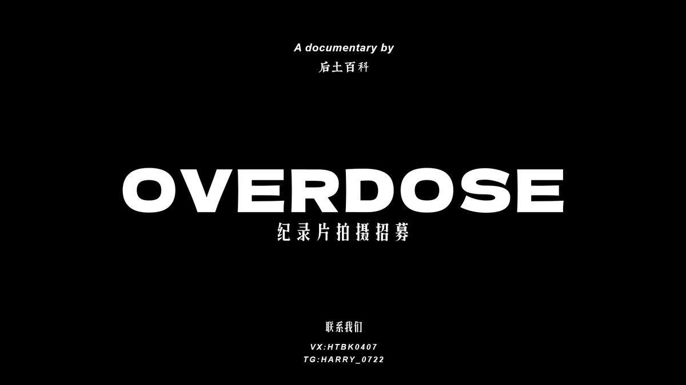
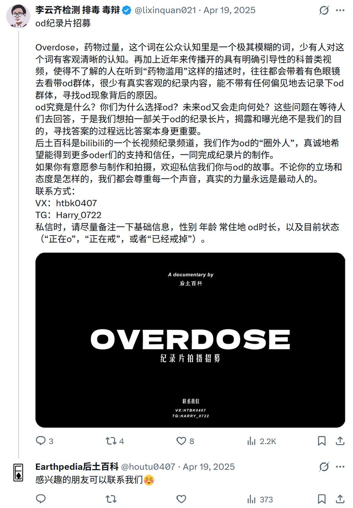
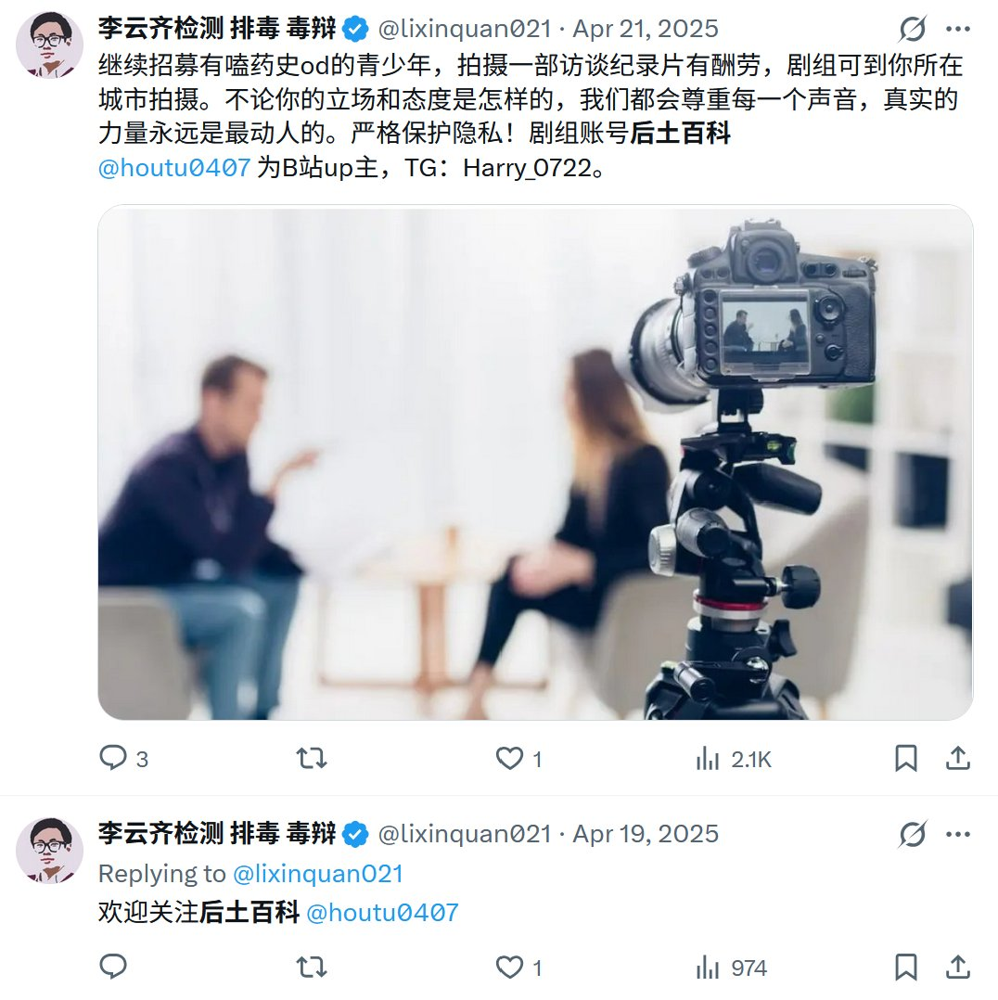

根据这个推文和它的两条回复分别的发布时间判断，李云齐等人参与其中的嫌疑更大了。
后土百科的推特账号回复了李云齐的招募贴，而回复时间与李云齐的发贴时间为疑点——恰好相差5-7分钟，刚好是切换推特账号并找到某贴子的耗时
所以，大家得多多调查啊，居然过了一年才发现🥺

后土百科的推特账号回复了李云齐的招募贴，而回复时间与李云齐的发贴时间为疑点——恰好相差5-7分钟，刚好是切换推特账号并找到某贴子的耗时
所以，大家得多多调查啊，居然过了一年才发现🥺




经调查两则推文，我们断定，后土百科与李云齐等人关系极大，甚至后土百科自身就是李云齐等人组织的。
所以，那个去年导致OD严重扩散的视频，很可能有李云齐等人涉及；而李云齐等人自身的业务与OD关系十分密切。 https://t.co/ROHHY7aDBt
所以，那个去年导致OD严重扩散的视频，很可能有李云齐等人涉及；而李云齐等人自身的业务与OD关系十分密切。 https://t.co/ROHHY7aDBt